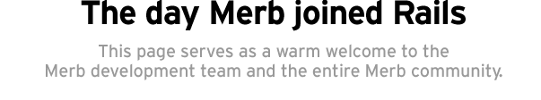
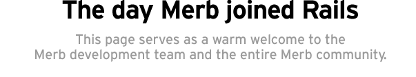

Merb history
Merb was started two years ago by Ezra Zygmuntowicz as a tiny framework to serve ERb templates from Mongrel. This quickly grew into much more and carved out a niche as an alternative Rails stack. Merbists focused on among other things a small speedy core, being ORM/JavaScript agnostic, and having a rigorous API for extensions.
Along with the expansion in ambition came the fact that Merb and Rails started sharing more and more of the same ideas and even implementation. This led to a fair amount of unnecessary duplication on both sides of the fence and led to some paradox of choice. When do I choose one over the other and when?
Rails 3
On December 23rd, we decided to end the duplication and the paradox of choice. That was the day we declared our intentions of bringing the best ideas of Merb into Rails 3. That was the day we announced our commitment to work together.
The Rails team and the Rails community offers their warmest welcome to the Merb team and the Merb community. We'd especially like to thank the key Merb people who'll be co-starring the effort to bring the bright Merb ideas in Rails:

Yehuda Katz (wycats) |
Ezra Zygmuntowicz (ezmobius) |
Matt Aimonetti (mattetti) |
|
Carl Lerche (carllerche) |
Daniel Neighman (hassox) |
Michael Klishin (antares) |
|
Lori Holden (lholden) |